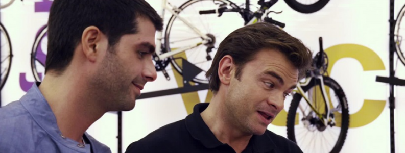

8 LA GRANDE BOUCLE
- Critique
- Comédie

 François Nouel a du mal à faire la séparation entre sa vie privé et sa vraie passion : le vélo. Lui l’ancien coureur dans sa jeunesse est devenu vendeur dans un magasin de cycles. Quand il se voit donner l’opportunité de suivre la course de l’intérieur, sa famille n’est pas heureuse et le lâche. Il va donc vivre le Tour de France à sa façon.
François Nouel a du mal à faire la séparation entre sa vie privé et sa vraie passion : le vélo. Lui l’ancien coureur dans sa jeunesse est devenu vendeur dans un magasin de cycles. Quand il se voit donner l’opportunité de suivre la course de l’intérieur, sa famille n’est pas heureuse et le lâche. Il va donc vivre le Tour de France à sa façon.
Ca ne faisait déjà pas bien rêver au départ mais le résultat est encore plus catastrophique que ce que je pensais. Il n’y a rien à retirer d’un film qui ne tourne malheureusement pas rond… Pas loin d’être la lanterne rouge de l’année.
- Timothée
- 24.06.2013, 19:19
 Alors que leur maman est victime d'un infarctus, trois frères, Henri, Philippe et Louis, commencent à se questionner sur le sens de leur vie. Et tous vont connaître une aventure en voyant arriver le fameux grand méchant loup…
Alors que leur maman est victime d'un infarctus, trois frères, Henri, Philippe et Louis, commencent à se questionner sur le sens de leur vie. Et tous vont connaître une aventure en voyant arriver le fameux grand méchant loup…
 John Harrison est un terroriste qui s’en prend à Starfleet, l’armée qui défend les planètes. Le capitaine Kirk se voit confier la mission de le traquer au plus loin, mais les choses vont peu à peu se compliquer.
John Harrison est un terroriste qui s’en prend à Starfleet, l’armée qui défend les planètes. Le capitaine Kirk se voit confier la mission de le traquer au plus loin, mais les choses vont peu à peu se compliquer.